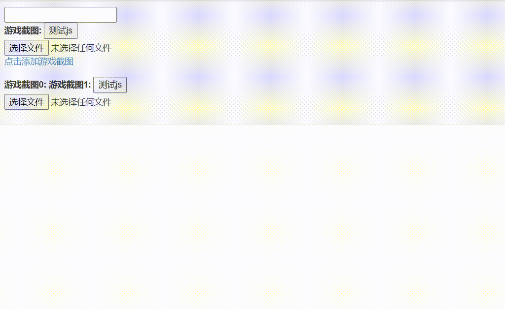

最近学长布置的任务，要求在页面中可以主动的、动态的进行一张表单的创建，因为还涉及到 form 表单内各种 id 不能冲突的问题，所以还是废了点时间的，而且国内 baidu 搜关键词也没怎么检索到很符合需求的答案，所以准备仔细的梳理一下。当然不只是表单，准备的说是在页面上动态创建节点，所以可借鉴性还是挺大的，等我忘了这个方法就回来翻博客也挺好。
同时，虽然只占很小的一部分但是最好还是不公开学长的源码，所以这里用的是我测试 “动态创建节点” 和 “变换 id 以避免 id 冲突” 时用的代码，加上补充时使用部分使用到项目中的非完全的 js 代码
此次虽然只有 "动态创建节点" 和 "避免 id 冲突" 两个大题，其实也把 "如何进行节点定位" 嵌进两个内容里面了，毕竟结合实例更好理解，我日后复习能复习的清楚点 orz
# 1. 动态创建节点
前端源码参照了 51CTO，如果不涉及有关 "子节点的相关操作" 的话，其实看这个也够了，但是如果需要对子节点操作，比如 id 冲突、特定子节点样式 / 值更改，则还需要继续学习。
先简述一下上面那个链接用到的 js 方法：
首先，用 getElementById 来获取被添加了点击事件 add_jietu () 的节点
var add_jietu = document.getElementById('add_jietu'); //add_jietu 对应的是元素的 id |
随后，使用主角 cloneNode 进行节点的复刻（如果不是复制当前节点，还要涉及其他步骤，这里先一点点整理）：
var node_clone = add_jietu.cloneNode(); |
如果复制节点不需要 id，则应把 id 删掉，以防止与前面节点的 id 冲突问题（id 需唯一）：
node_clone.removeAttribute('id'); |
最后提取想要复制的节点的父节点，以便将新的复刻节点添加到父节点下，即复刻节点与原来的节点拥有同一个父节点：
var nodeFather = add_jietu.parentNode; | |
nodeFather.appendChild(node_clone); |
于是我们就可以手动添加节点啦，点击 span 标签，效果是下面这个样子的：

之后是刚才提到的，不是复制当前节点的话如何进行被克隆节点的定位，就像我遇到的需求：我点击的是我的 button 按钮，但需要复制的是表单，这时就需要使用 parent ()，children ()，siblings ()，利用事件监听节点和被复制节点的 div 容器关系进行定位，这部分应该是 Jquery 的语法，我一直对两者的区分不是很透彻（用的时候都混在一起用）。下面是我对学长项目进行功能添加时编写的一部分代码，无法 po 出包括前端在内的完整代码，所以只能文字讲解：
//yaqin | |
// 测试动态表单 onclick 是否有效 | |
function submit_contract(obj) { | |
var btnx = $(obj).parent(); | |
//var requestGroup = btnx.parent(); | |
var formGroup = btnx.siblings("div[id^='form-group']"); | |
//var lia = formGroup.children ("li.a1"); // 扩展，li 标签 namme 为 a1 的子节点 | |
//alert(lia.first().text() + lia.eq(1).text()); | |
var lib = formGroup.children("li.b1"); | |
} |
首先，函数参数 obj 即为 button 按钮点击事件时传回来的参数，在前端 button 标签中需添加 onclick="submit_contract(this)" ， this 即为 button 本身，利用 $(obj) 可以将 dom 节点转换为 jquery 对象，随后我们可以使用 parent () 函数提取父节点：
var btnx = $(obj).parent(); |
但单就我的例子来说：我的表单是 "button 的父节点的同宗节点"，故需要用到 siblings() 函数，但同时与 button 的父节点互为同宗节点的有很多，我还需要通过表达式进行筛选：
- 这里 siblings 函数内参数中的
div表示要求同宗节点标签是 div [id^='form-group']表示限制其 id 以 form-group 开头；id 换成 name 就是对 name 属性进行筛选，^= 也可以换成别的，和正则表达式差不多，参考链接
| 表达式 | 含义 |
|---|---|
| attribute^=value | attr 属性的值以 value 作为开头 |
| attribute$=value | attr 属性的值以 value 作为结尾 |
| attribute*=value | attr 属性的值中包含 value |
| attribute!=value | attr 属性中不含有 value 值 |
通过上述的筛选，我变精准的找到了我要复制的表单 form-group [数字]，有数字因为涉及到 id 冲突，也是为什么我需要用表达式进行筛选而不是直接 "="
var formGroup = btnx.siblings("div[id^='form-group']"); |
# 2. 更换节点 id—— 避免 id 冲突
还记得上面的节点 node_clone 吗，其实改变 id 很简单，因为可以直接获取到 id 属性修改，这里我们定义全局变量 i，每执行一次点击事件就让 ++i ，并将 i 值嵌入我们的 id 属性值中，就避免了 id 冲突啦！这个思路十分的程序猿
var i = 0; // 重点在这里 | |
function add_jietu() | |
{ | |
var add_jietu = document.getElementById('add_jietu' + i); | |
var nodeFather = add_jietu.parentNode; | |
var node_clone = add_jietu.cloneNode(true); | |
++i; | |
node_clone.id = "add_jietu" + i; // 重点在这里 | |
…… |
那么问题又来了！我不仅要改复制节点的 id，复制节点还有子节点呀，他们的 id 怎么办？这个时候就可以用 getElementsByTagName 进行筛选啦！
getElementsByTagName(value) 会返回标签为 value 的子节点的 List，之后按数组的形式一个个修改 id 就可以啦！注意下标是根据筛选结果走的，不同标签的筛选结果需要从新计数：
newFormNode.id = "request-group" + i; | |
newFormNode.getElementsByTagName('input')[0].id = "consumersubject" + i; | |
newFormNode.getElementsByTagName('input')[1].id = "consumerobject" + i; | |
newFormNode.getElementsByTagName('input')[2].id = "consumerstarttime" + i; | |
newFormNode.getElementsByTagName('button')[1].id = "submit_provider" + i; |
需要注意的是 getElementsByTagName 方法是 dom 节点，即 javascript 的语法，如果用 $(obj) 将 dom 转换成 jq 对象了的话，使用 parent() ， children() 函数就可以了，但是还差个小尾巴 ↓
随后学长的项目又给我出了点难题，论子节点的子节点要修改 id 怎么办？而且子节点很多，用的标签都是一样的，偏偏需要改 id 的只有那么几个，我们还是用 children () 获取的子节点：
var lib = formGroup.children("li.b1"); |
其中 li.b1 表示 li 标签 name 为 b1 的子节点，那 children 返回的是数组，如何获取指定节点呢？这里我也是使用的坐标定位，但不是单纯的把下标加在后面，jquery 有自己的获取指定第几个节点的函数：
var lib = formGroup.children("li.b1"); | |
var consumersubject = lib.first(); | |
var consumerobject = lib.eq(1); | |
var consumerstarttime = lib.eq(2); |
first() 、 last() 分别表示 List <节点> 中的第一个节点和最后一个节点， eq(value) 表示的是第 value 个节点，之后再在此基础上进行子节点的筛选，就能找到子节点的子节点并对他进行操作啦！
比如下面我需要获取 "子节点的子节点" 的 value 值：
var lib = formGroup.children("li.b1"); | |
var consumersubject = lib.first().children("input[id^='consumersubject']").val(); | |
var consumerobject = lib.eq(1).children("input[id^='consumerobject']").val(); | |
var consumerstarttime = lib.eq(2).children("input[id^='consumerstarttime']").val(); |
参考链接：https://stackoverflow.com/questions/46078328/change-ids-of-child-elements-in-javascript-when-cloning-an-element
# 结语
做这个动态添加表单的功能时，感觉就是疯狂的脑筋急转弯，因为真的有点绕，写着写着就记不住自己定位到哪里了，就像这次学长的那个表单其实是 "button 的父节点的同宗节点的子节点的子节点"，更何况我还是边学习边写，真的很绕 hhhhh
之后我总结下来的经验是：
- 一定要先对 div 容器有个大致的了解，比如 div 和 div 之间的关系啥的，最好是先把缩进调正确了，后期会省很多时间（偷偷来一句不在乎缩进的同僚是真的屑）
- 不要都写在一行，对于我们初学者，可以先不用在乎变量创建的多少，参照我那个任务，老老实实按当前节点 —— 父节点 —— 同宗节点 —— 子节点 —— 子节点来创建，这样调试也容易知道自己试哪里出的问题。
- 虽然根本不是什么复杂问题但还是可以用高内聚低耦合的思想看，说白了就是复杂问题拆成简单问题
整理了半天总算是捋顺了，最后夹杂一下私货，祝自己生日快乐🎉